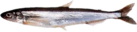
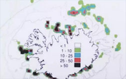

毛鳞鱼

体型：3-4年的毛鳞鱼的平均大小约为13-20厘米。
捕捞量：与2013年451053吨相比较，2014年冰岛海域毛鳞鱼的总捕获量是111480吨。
捕捞季节：冰岛毛鳞鱼的捕捞时间为一月到三月。
渔场：毛鳞鱼捕捞最重要的区域是冰岛西部、东南部以及西南部海岸。
产品类别：供人们食用的毛鳞鱼主要以整体冷冻（陆地冷冻和海上冷冻）以及冷冻毛鳞鱼子的形式出口。
主要市场：冰岛毛鳞鱼产品的主要市场有：俄罗斯、立陶宛和日本。

毛鳞鱼，2014、2015年捕捞期冰岛渔场，深色区域代表最高捕捞区（吨/平方海里）